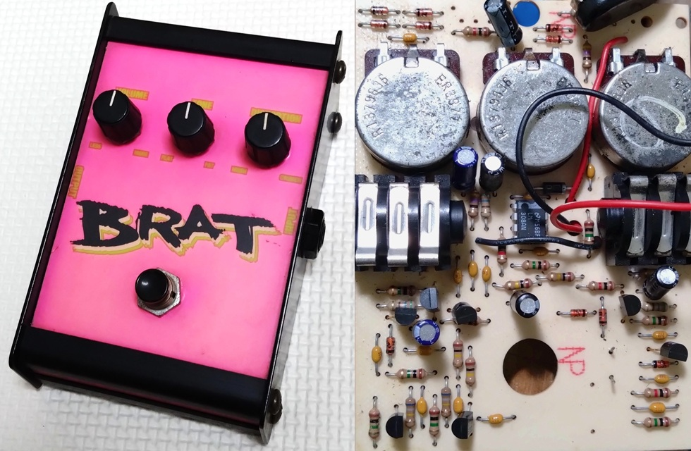

ProCo BRAT 修理・解析
2026年01月23日 カテゴリー：修理・改造・解析

ジャンク品として手に入れたProCo BRATを修理、解析しました。 KiCadデータ（基板画像入り）とLTspiceの回路図データはGitHubにあります。 RATの歴史や回路解析については下記リンクをご参照ください。
- JHS Pedals - PROCO RAT PEDAL MYTHS, HISTORY, AND TIMELINE
- ElectroSmash - ProCo Rat Analysis
【回路図】

すでに出回っている回路との違いは、C6の33pFだけでした。予算が限られていたらしくケースにプラスチックの部分がありますが、基板上の部品点数は多くなっています。オペアンプの帰還内にクリッピングダイオードが配置されているのが特徴的です。
入出力部のJFET
ソースフォロワではなく、ドレインからの出力です。増幅率は実測でほぼ1倍で、バッファとして働いています。バッファがない通常のRATではC4（1nF）による音色変化がありますが、バッファがあるBRATの場合は可聴域外の高音域カットになります。
TONE
TONEノブを時計回りに回すと高音域がカットされなくなり、フラットな特性に近づきます。この場合のポットはAカーブではなくCカーブを使う方が適切と思われます。ケースの表記はFLAT→FATなので、ポット接続のミスかもしれません。後段にすぐVOLUMEポットがあるため、TONEポットの抵抗値が大きくなると音量が下がる特徴もあります。
JFETスイッチ
通常、JFETのドレイン側とソース側どちらか（もしくは両方）がバイアス電圧に接続されますが、BRATでは接続されていません。シミュレーションしてみると、電源電圧付近にバイアスされるようです。この場合、入力電圧が大きいと歪みが生じます。
【修理・改造】

以下の修理・改造を行いました。
- ジャック交換
- ネジ穴にインサートナットを挿入
- ケースの金属板全てをグラウンドへ接続
- トゥルーバイパス化
- インジケーターLED追加
- 電解コンデンサ交換
- TONEポットの端子接続を変え、時計回りで高音域カットへ変更
- DCジャック増設（電池使用不可）